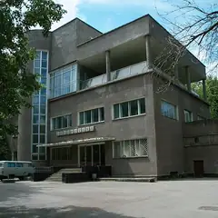
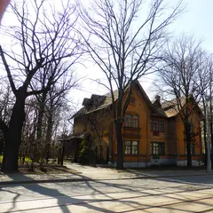

Подборку собрали 21 октября, прошедшие события скрыты. Свежая афиша — на главной
Подборка · данные на 15 октября
Недорогое свидание в Москве
39 планов, где каждая остановка обходится примерно до 1 500 ₽ на человека, а часть и вовсе бесплатна: парки, набережные, смотровые площадки. Ниже — ещё 120 мест для свидания с таким же чеком и 2 события с бесплатным входом в ближайшие две недели. Цены — ориентир: меню и билеты лучше проверить перед выходом.
- 39 планов
- 120 мест
- 2 бесплатных события
Планы до 1 500 ₽ на человека 24 из 39

- Культурный центр ЗИЛ · Культурный центр · м. Автозаводская
- 13 минут пешкомStrEAT · Фудхолл
Лекция или кино в конструктивистском ДК ЗИЛ, а потом фудхолл StrEAT в корпусе завода «Динамо»: дагестанские хинкалы или баббл-ти — каждый берёт своё.
Открыть план: ДК ЗИЛ и уличная едаПозвать сюда: ДК ЗИЛ и уличная еда
Фото: NVO, CC BY-SA 3.0 · Wikimedia Commons
- Музей-квартира Достоевского · Музей · м. Достоевская
- 12 минут пешкомФудхолл «Дружба» · Фудхолл
Квартира, где прошло детство Достоевского, а через десять минут — фудхолл «Дружба»: рамен, утка по-пекински или малатан, порции большие, цены спокойные.
Открыть план: Достоевский и фудхолл «Дружба»Позвать сюда: Достоевский и фудхолл «Дружба»
Фото: Lesio, CC BY-SA 3.0 · Wikimedia Commons
- Парк 40-летия Победы · Парк · Зеленоград — Крюково (МЦД-3)
- 27 минут пешкомBrunch Time · Кафе завтраков
Утренний круг вокруг пруда в главном парке Зеленограда, а потом Brunch Time, где драники, бенедикты и вафли с солёной карамелью подают весь день.
Открыть план: Зеленоград: пруд и завтрак весь деньПозвать сюда: Зеленоград: пруд и завтрак весь день
Фото: Sergey A. Demidov, CC BY 4.0 · Wikimedia Commons
- Сова · Кофейня · м. Волжская
- 27 минут пешкомУсадьба Люблино · Усадьба
Капучино за 150–350 ₽ в «Сове», куда можно с собакой, а потом прогулка к дворцу-ротонде и пруду усадьбы Люблино — на двоих выйдет дешевле одного ужина.
Открыть план: Кофе в «Сове» и Люблино с собакойПозвать сюда: Кофе в «Сове» и Люблино с собакой
Фото: NVO, CC BY 3.0 · Wikimedia Commons
- Музей космонавтики · Музей · м. ВДНХ
- 9 минут пешкомМоскино Космос · Кинотеатр
Спускаемые аппараты и скафандры под монументом «Покорителям космоса», а потом сеанс в кинотеатре «Космос» 1964 года — на огромном экране или в крошечном зале с пуфами. Билеты недорогие.
Открыть план: Музей космонавтики и кино в «Космосе»Позвать сюда: Музей космонавтики и кино в «Космосе»
Фото: Музей космонавтики, CC0 · Wikimedia Commons
- Посёлок «Сокол» · Исторический посёлок · м. Сокол
- 22 минуты пешкомClara · Кофейня
Тихие улицы посёлка «Сокол» с деревянными домами 1920-х, а потом Clara у «Октябрьского Поля»: мест много, раф с лавандой и канеле — можно сидеть и говорить часами.
Открыть план: Посёлок художников и кофеПозвать сюда: Посёлок художников и кофе
Фото: A.Savin, CC BY-SA 3.0 · Wikimedia Commons
- Сходненская чаша · Природный памятник · м. Сходненская
- 17 минут пешкомИду лесом · Кофейня в усадьбе
Вид сверху на Сходненскую чашу — природный амфитеатр в Тушине, — потом по старому парку над Сходней в «Иду лесом»: мягкие диваны, книги и завтраки.
Открыть план: Сходненская чаша и кофейня в усадьбеПозвать сюда: Сходненская чаша и кофейня в усадьбе
Фото: barmalei1971, CC BY-SA 3.0 · Wikimedia Commons
- Гоголевский бульвар · Бульвар · м. Кропоткинская
- 4 минуты пешкомНитка · Русская чайная
Гоголевский бульвар под жёлтыми липами и долгий чай в отдельной комнате «Нитки».
Открыть план: Бульвар и самоварПозвать сюда: Бульвар и самовар
Фото: Panther, CC BY-SA 3.0 · Wikimedia Commons
- Ленинская библиотека · Библиотека с видом на Кремль · м. Библиотека имени Ленина
- 18 минут пешкомДом Перцовой · Доходный дом-терем
Бесплатные виды на Кремль из залов Ленинской библиотеки и дом Перцовой с павлинами и райскими птицами у Храма Христа Спасителя.
Открыть план: Виды из Ленинки и сказочный теремПозвать сюда: Виды из Ленинки и сказочный терем
Фото: krassotkin, CC BY 3.0 · Wikimedia Commons
- Дом Гоголя · Музей · м. Арбатская
- 4 минуты пешкомХудожественный · Кинотеатр
Дом, где Гоголь сжёг второй том «Мёртвых душ», и вечерний сеанс в старейшем кинотеатре Москвы.
Открыть план: Вий, Гоголь и киноПозвать сюда: Вий, Гоголь и кино
Фото: Shakko, CC BY-SA 4.0 · Wikimedia Commons
- Парк 40-летия Победы · Парк · Зеленоград — Крюково (МЦД-3)
- 19 минут пешкомЗеленоградский лесопарк · Лесопарк
Парк с прудом и прогулка по Зеленоградскому лесопарку.
Открыть план: Выходной в ЗеленоградеПозвать сюда: Выходной в Зеленограде
Фото: Sergey A. Demidov, CC BY 4.0 · Wikimedia Commons
- Винзавод · Центр современного искусства · м. Чкаловская
- 10 минут пешкомArtplay · Дизайн-центр
Несколько выставок подряд в бывших цехах, кофе и дизайн-лавки — разговор завяжется сам.
Открыть план: Галереи Винзавода и ArtplayПозвать сюда: Галереи Винзавода и Artplay
Фото: Lite, CC BY-SA 4.0 · Wikimedia Commons
- Музей «Гараж» · Музей современного искусства · м. Парк культуры
- 25 минут пешкомНескучный сад · Парк
Современное искусство, а потом долгая прогулка вдоль реки в самую тихую часть Парка Горького.
Открыть план: Гараж и Нескучный садПозвать сюда: Гараж и Нескучный сад
Фото: Garage Museum of Contemporary Art, CC BY-SA 4.0 · Wikimedia Commons
- ГЭС-2 · Дом культуры · м. Кропоткинская
- 15 минут пешкомМузеон · Парк
Бесплатные выставки в бывшей электростанции, а потом прогулка вдоль реки до Музеона.
Открыть план: ГЭС-2 и прогулка к МузеонуПозвать сюда: ГЭС-2 и прогулка к Музеону
Фото: Юрий Д.К., CC BY 4.0 · Wikimedia Commons

- Домик Вильямса · Деревянный дом в саду · м. Петровско-Разумовская
- 25 минут пешкомТимирязевский парк · Лесопарк
Сначала «викторианский» деревянный дом, привезённый из Англии в 1876 году, и сад, осенью увитый красным плющом, а потом минут 25 пешком до вековых деревьев и Большого садового пруда Тимирязевского парка — дорога тоже часть прогулки.
Открыть план: Домик в плюще и лес ТимирязевкиПозвать сюда: Домик в плюще и лес Тимирязевки
Фото: Kemal KOZBAEV, CC BY-SA 4.0 · Wikimedia Commons
- Московский планетарий · Планетарий · м. Баррикадная
- 2 минуты пешкомBlinkGame · Компьютерный клуб
Звёздный зал под огромным куполом планетария, а через две минуты лаунж с четырьмя PS5: сыграть вдвоём на желание.
Открыть план: Звёзды и PS5 на двоихПозвать сюда: Звёзды и PS5 на двоих
Фото: A.Savin, Free Art License · Wikimedia Commons
- Kiosk 1936 · Кафе · м. Чистые пруды
- 1 минута пешкомЧистые пруды · Бульвар и пруд
Паштел-де-ната и кофе в угловом «Киоске», потом круг по бульвару вокруг пруда.
Открыть план: Кофе и листья на ЧистыхПозвать сюда: Кофе и листья на Чистых
Фото: Vasilii Martynov, CC BY-SA 4.0 · Wikimedia Commons
- Новодевичий монастырь · Монастырь · м. Спортивная
- 3 минуты пешкомНоводевичьи пруды · Парк
- 17 минут пешкомABC Coffee Roasters · Кофейня
Стены и башни монастыря отражаются в пруду, вокруг жёлтые ивы. Согреться — кофе в ABC на Усачёва.
Открыть план: Новодевичий в листопадПозвать сюда: Новодевичий в листопад
Фото: Ivtorov, CC BY-SA 4.0 · Wikimedia Commons
- Дом-музей Пастернака · Музей · м. Боровское шоссе
- 11 минут пешкомГаражи · Культурное пространство
Сначала дача Пастернака в писательском посёлке, а минутах в десяти пешком — «Гаражи» на бывшей автобазе Союза писателей: книги, лекции, спектакли из советской «полуторки», по выходным винтажный рынок.
Открыть план: Осень в ПеределкинеПозвать сюда: Осень в Переделкине
Фото: Артём Белевич, CC BY-SA 4.0 · Wikimedia Commons
- Парк «Зарядье» · Парк · м. Китай-город
- 20 минут пешкомИллюзион · Кинотеатр
Вид на Кремль с моста над рекой, а через 20 минут прогулки — классика на большом экране в высотке.
Открыть план: Парящий мост и старое киноПозвать сюда: Парящий мост и старое кино
Фото: Alina Vozna, CC BY-SA 4.0 · Wikimedia Commons
- Битцевский лес · Природный парк · м. Новоясеневская
Длинная прогулка по экотропам Битцевского леса к родникам: собаке на поводке есть где нагуляться, а вам — поговорить без шума города.
Открыть план: Битца с собакойПозвать сюда: Битца с собакой
Фото: Stolbovsky, CC BY-SA 4.0 · Wikimedia Commons
- Ростокинский акведук · Акведук XVIII века · м. ВДНХ
Каменный акведук XVIII века над Яузой — красивее всего на закате.
Открыть план: Акведук над ЯузойПозвать сюда: Акведук над Яузой
Фото: Dmitry Ivanov., CC BY-SA 4.0 · Wikimedia Commons
- Кусково · Усадьба · м. Новогиреево
Усадьба Шереметевых: Голландский домик, Грот и длинная прогулка вокруг большого пруда.
Открыть план: Дворец и пруд в КусковоПозвать сюда: Дворец и пруд в Кусково
Фото: A.Savin, Free Art License · Wikimedia Commons
- ДеЛаперуз · Кофейня-кафе · м. Сходненская
- 6 минут пешкомКаток в ТРЦ «Калейдоскоп» · Крытый каток
Авторские десерты в семейной кофейне «ДеЛаперуз», где не продают алкоголь, а через пять минут — крытый каток в «Калейдоскопе», который работает круглый год.
Открыть план: Десерты и крытый каток у «Сходненской»Позвать сюда: Десерты и крытый каток у «Сходненской»


Недорогие места для свидания 24 из 120
Красная площадь
Главная площадь страны: Кремль, Василий Блаженный, ГУМ и Исторический музей в одном кадре.
Подробнее и маршрут: Красная площадьПозвать сюда: Красная площадь
Фото: mos.ru, CC BY 4.0 · Wikimedia Commons
Большой Патриарший пер.
Пруд из «Мастера и Маргариты»: скамейки, кафе вокруг, зимой — каток.
Подробнее и маршрут: Патриаршие прудыПозвать сюда: Патриаршие пруды
Фото: Dimа, CC BY-SA 3.0 · Wikimedia Commons
Чистопрудный бул.
Бульвар с прудом: летом лодки и лебеди, зимой каток. Рядом Меншикова башня.
Подробнее и маршрут: Чистые прудыПозвать сюда: Чистые пруды
Фото: Vasilii Martynov, CC BY-SA 4.0 · Wikimedia Commons
Александровский сад
Сад вдоль Кремлёвской стены: Вечный огонь, Итальянский грот и смена почётного караула.
Подробнее и маршрут: Александровский садПозвать сюда: Александровский сад
Фото: Надежда Пивоварова, CC BY-SA 3.0 · Wikimedia Commons
ул. Арбат
Старейшая пешеходная улица: уличные музыканты, художники, Стена Цоя и квартира Пушкина.
Подробнее и маршрут: АрбатПозвать сюда: Арбат
Фото: Alex 'Florstein' Fedorov, CC BY-SA 4.0 · Wikimedia Commons
ул. Косыгина, смотровая площадка
Лесистый склон над Москвой-рекой. У главного здания МГУ — смотровая с видом на Лужники и Сити.
Подробнее и маршрут: Воробьёвы горыПозвать сюда: Воробьёвы горы
Фото: Niklitov, CC BY-SA 4.0 · Wikimedia Commons
пр. Андропова, 39
Холмы над рекой, белая церковь Вознесения и деревянный дворец царя Алексея Михайловича.
Подробнее и маршрут: КоломенскоеПозвать сюда: Коломенское
Фото: Ludvig14, CC BY-SA 4.0 · Wikimedia Commons
Большая Садовая ул., 10
«Нехорошая квартира» №50, где жил Булгаков. Вт–вс, по четвергам до 21:00.
Подробнее и маршрут: Музей БулгаковаПозвать сюда: Музей Булгакова
Фото: Usolt, CC BY 3.0 · Wikimedia Commons
пр. Мира, 111
Под монументом «Покорителям космоса»: настоящие спускаемые аппараты, скафандры и макет станции «Мир».
Подробнее и маршрут: Музей космонавтикиПозвать сюда: Музей космонавтики
Фото: Музей космонавтики, CC0 · Wikimedia Commons
Крымский Вал, 2
Парк скульптур и прогулка по набережной Москвы-реки.
Подробнее и маршрут: МузеонПозвать сюда: Музеон
Фото: sailko, CC BY-SA 3.0 · Wikimedia Commons
ул. Крымский Вал, 9
Главный парк города: набережная, Голицынский пруд, летние веранды, а зимой — большой каток.
Подробнее и маршрут: Парк ГорькогоПозвать сюда: Парк Горького
Фото: A.Savin, Free Art License · Wikimedia Commons
Новоясеневский просп., 21 к3
Огромный лес на юго-западе: экотропы, родники и конноспортивный комплекс.
Подробнее и маршрут: Битцевский лесПозвать сюда: Битцевский лес
Фото: Stolbovsky, CC BY-SA 4.0 · Wikimedia Commons
Гоголевский бул.
Тенистый бульвар от Арбатской площади к Храму Христа Спасителя.
Подробнее и маршрут: Гоголевский бульварПозвать сюда: Гоголевский бульвар
Фото: Panther, CC BY-SA 3.0 · Wikimedia Commons
ул. Пречистенка, 12/2
Главный пушкинский музей в усадьбе Хрущёвых на Пречистенке.
Подробнее и маршрут: Государственный музей ПушкинаПозвать сюда: Государственный музей Пушкина
Фото: NVO, CC BY-SA 2.5 · Wikimedia Commons
Болотная наб., 15
Бывшая электростанция напротив Кремля: выставки, кино и бар у входа. Вход бесплатный по регистрации на сайте, 11:00–22:00.
Подробнее и маршрут: ГЭС-2Позвать сюда: ГЭС-2
Фото: Юрий Д.К., CC BY 4.0 · Wikimedia Commons
Никитский бул., 7А
Усадьба на Никитском бульваре, где Гоголь сжёг второй том «Мёртвых душ».
Подробнее и маршрут: Дом ГоголяПозвать сюда: Дом Гоголя
Фото: Shakko, CC BY-SA 4.0 · Wikimedia Commons
ул. Павленко, 3
Дача Пастернака в писательском посёлке Переделкино.
Подробнее и маршрут: Дом-музей ПастернакаПозвать сюда: Дом-музей Пастернака
Фото: Артём Белевич, CC BY-SA 4.0 · Wikimedia Commons
ул. Новый Арбат, 24
Новое
Кинотеатр 1967 года с огромной мозаикой на фасаде: 11 залов, зал IMAX и главный зал на 1500 мест, где проходил ММКФ. Последние сеансы — ближе к двум ночи.
Подробнее и маршрут: Каро 11 ОктябрьПозвать сюда: Каро 11 Октябрь
Фото: Svetlov Artem, CC BY-SA 4.0 · Wikimedia Commons
ул. Вильгельма Пика
Китайский сад с пагодами, мраморными мостиками и прудом с карпами. Вход бесплатный, 8:00–22:00.
Подробнее и маршрут: Китайский парк «Хуамин»Позвать сюда: Китайский парк «Хуамин»
Фото: Soluxe Hotel Moscow, CC BY-SA 4.0 · Wikimedia Commons
Крымский мост
Висячий мост между Парком Горького и Музеоном — особенно хорош на закате.
Подробнее и маршрут: Крымский мостПозвать сюда: Крымский мост
Фото: A.Savin, Free Art License · Wikimedia Commons
Восточная ул., 4, корп. 1
Конструктивистский дворец культуры: спектакли, кино, лекции.
Подробнее и маршрут: Культурный центр ЗИЛПозвать сюда: Культурный центр ЗИЛ
Фото: NVO, CC BY-SA 3.0 · Wikimedia Commons
ул. Юности, 2
Усадьба Шереметевых: дворец, Голландский домик, Грот и большой пруд.
Подробнее и маршрут: КусковоПозвать сюда: Кусково
Фото: A.Savin, Free Art License · Wikimedia Commons
ул. Большая Ордынка, 34
Белоснежный храм Щусева и тихий сад на Большой Ордынке.
Подробнее и маршрут: Марфо-Мариинская обительПозвать сюда: Марфо-Мариинская обитель
Фото: NVO, CC BY 2.5 · Wikimedia Commons
Пресненская наб., 8
Небоскрёбы на Пресненской набережной: смотровые, рестораны на высоте и прогулка по мосту «Багратион».
Подробнее и маршрут: Москва-СитиПозвать сюда: Москва-Сити
Фото: Igorkhait (cropped by Siktira), CC BY 4.0 · Wikimedia Commons


Бесплатные события 2
Музей «Гараж», −1 этаж · м. Октябрьская · бесплатно · 12+
Инсталляция-диалог: две лампы общаются вспышками и звуком, а розовая зеркальная комната множит тебя до бесконечности. Вход бесплатный, фото выходят эффектные.
Подробнее: Вадим Фишкин «Словарь воображаемых мест»Позвать сюда: Вадим Фишкин «Словарь воображаемых мест»Билеты : Вадим Фишкин «Словарь воображаемых мест» (страница с билетами, откроется в новой вкладке)
Фото: Garage Museum of Contemporary Art, CC BY-SA 4.0 · Wikimedia Commons
Музей «Гараж», мезонин · м. Октябрьская · бесплатно · 12+
Можно поиграть в искусство: две 8-битные игры-инсталляции индийской художницы по мотивам советских детских книг. Бесплатно, а рядом Парк Горького.
Подробнее: Видеоигры Афры ШафикПозвать сюда: Видеоигры Афры ШафикБилеты : Видеоигры Афры Шафик (страница с билетами, откроется в новой вкладке)
Фото: Garage Museum of Contemporary Art, CC BY-SA 4.0 · Wikimedia Commons
Как позвать
- Выбери план, место или событие — в карточке адрес, цены и маршрут в Яндекс Картах.
- Нажми «Позвать сюда» — соберётся приглашение-игра для свидания или голосование для компании.
- Отправь ссылку в любой мессенджер: тебе ответят, а компания отметит, куда и когда может. Бесплатно и без регистрации.